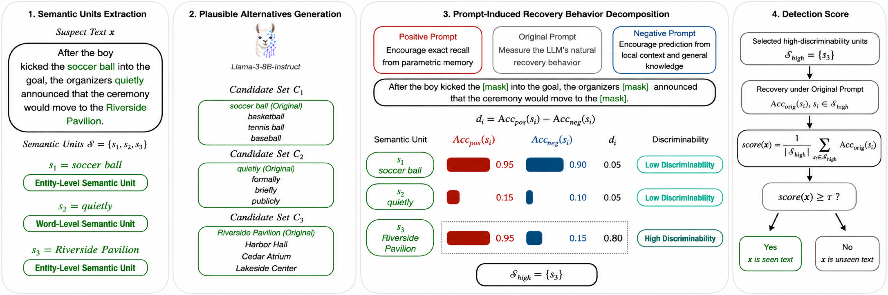
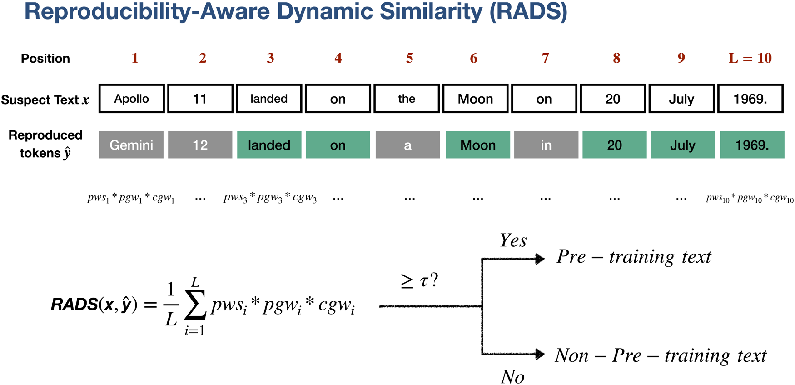
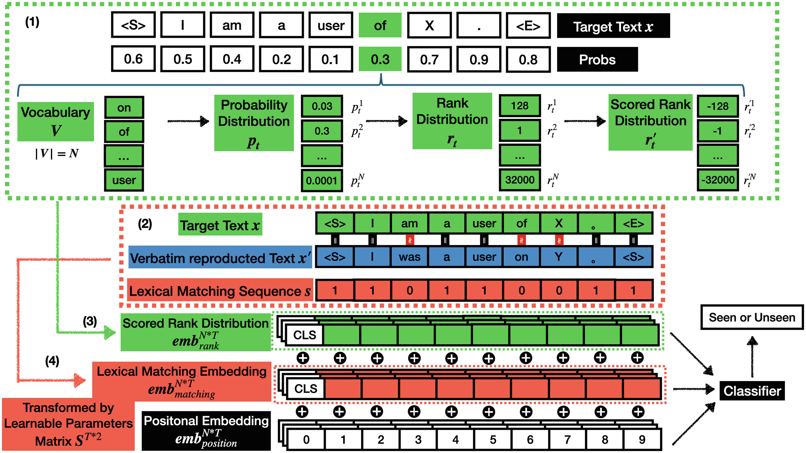
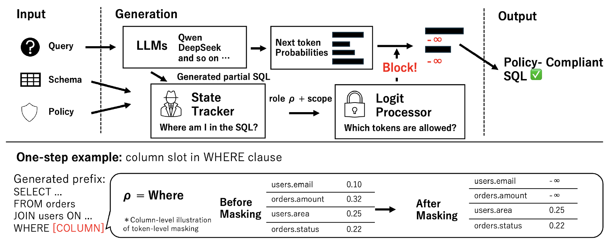
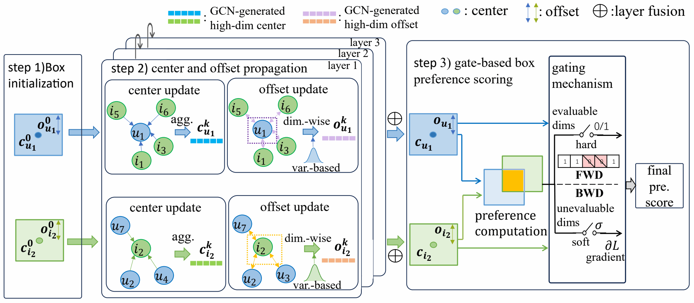
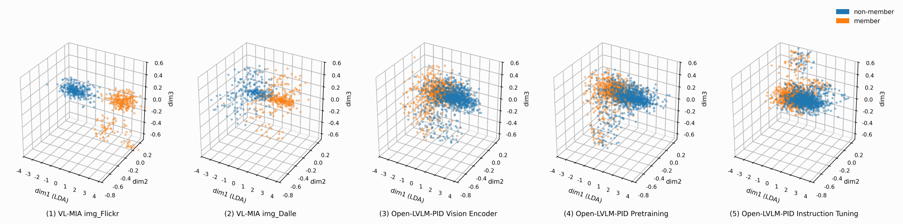
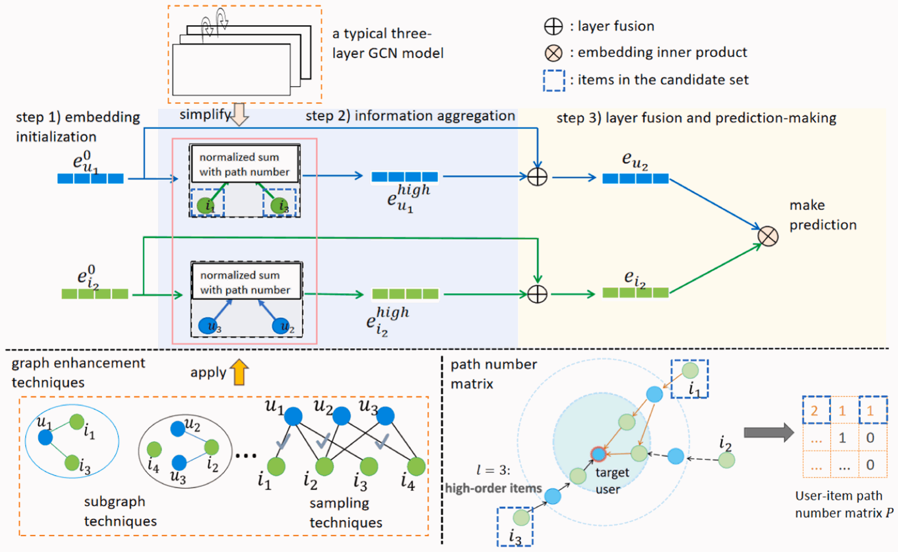
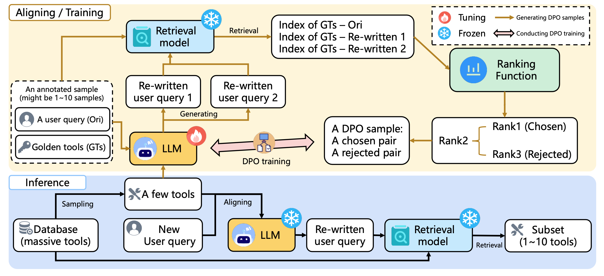
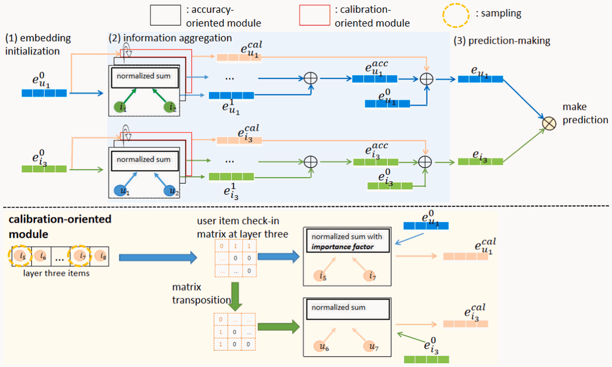

早稻田大学（日本·东京）
2024 年 4 月–至今
计算机科学与通信工程专业，博士课程
大学院基干理工学研究科
预计毕业：2027 年 3 月
我目前就读于早稻田大学大学院基干理工学研究科博士课程，在山名研究室开展研究，导师为山名早人教授。
我的研究以大语言模型为核心。
* 同等贡献。

Conference on Empirical Methods in Natural Language Processing (EMNLP), 2026 年 10 月 已录用 / 待出版



Conference of the Asia-Pacific Chapter of the Association for Computational Linguistics and International Joint Conference on Natural Language Processing (AACL-IJCNLP), 2026 年 11 月 已录用 / 待出版



Pattern Recognition, 2025 年 11 月


Neurocomputing, 2024 年 2 月
2024 年 4 月–至今
计算机科学与通信工程专业，博士课程
大学院基干理工学研究科
预计毕业：2027 年 3 月
2022 年 4 月–2024 年 3 月
计算机科学与通信工程专业，硕士课程
大学院基干理工学研究科
2024 年 4 月–2025 年 3 月
研究助理
研究大语言模型中的版权侵害问题。
2026–2027 年
由早稻田大学理工学术院综合研究所与 KIOXIA 公司提供研究支持。